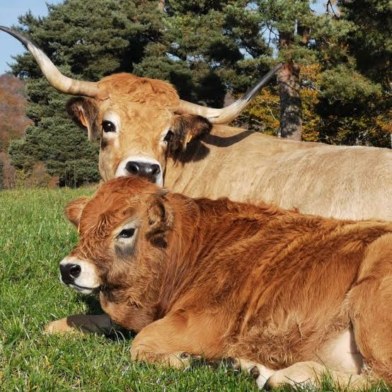

Dès le XIIe siècle, les moines-hospitaliers de la Dômerie d'Aubrac, fondée en 1120 pour secourir les pèlerins de Compostelle égarés sur le plateau, développent l'élevage bovin pour subvenir aux besoins de leur communauté. De cette tradition pastorale naît peu à peu une race façonnée par la rudesse du climat volcanique : hivers longs et enneigés, étés courts, pâturages d'altitude entre 1000 et 1400 mètres.

Vache Aubrac, reconnaissable à son maquillage naturel
Reconnaissable entre toutes à sa robe froment, ses cornes en lyre et le cerclage noir qui souligne ses yeux comme un trait de khôl, la race Aubrac fut longtemps une vache mixte, à la fois laitière, de trait et de boucherie. Le herd-book de la race est ouvert dès 1893, l'une des premières sélections raciales organisées de France.
La mécanisation agricole du XXe siècle manque de lui être fatale : délaissée au profit de races plus productives, la population chute drastiquement dans les années 1970. C'est la mobilisation d'éleveurs passionnés et la création du Label Rouge « Bœuf Fermier Aubrac » en 1997 qui relancent la race, aujourd'hui redevenue emblématique du plateau.
L'Aubrac, c'est une vache qui a du caractère, à l'image de son pays.
— Un éleveur du plateau
🥾
Visite pratique
⏱️
Durée
1h à 2h selon la ferme et l'animation proposée
📊
Difficulté
Facile · visite de ferme accessible en famille
🚗
Accès
Plateau de l'Aubrac, autour de Laguiole et Nasbinals, Aveyron
🎟️
Tarif
Gratuit à quelques euros selon les fermes et animations
✦ Infos pratiques
Fête de la transhumance Fin mai, à Laguiole et Nasbinals, montée des troupeaux en estive
Estive De mai à octobre, vaches et veaux pâturent en plein air sur le plateau
Fermes ouvertes Visites sur réservation auprès des GAEC du plateau
Meilleure période Juin à septembre, troupeaux visibles en estive
Nombre d'éleveurs Plusieurs centaines regroupés au sein de l'association Aubrac
Stationnement Aires dédiées à Laguiole, Nasbinals et Aubrac village
1
La ferme d'élevage
Découverte du troupeau, du système d'élevage extensif et du lien entre l'éleveur et ses bêtes, souvent nommées individuellement.
2
La montée en estive
Chaque printemps, les troupeaux quittent l'étable pour rejoindre les vastes pâturages d'altitude, lors de la fête traditionnelle de la transhumance.
3
La vie sur le plateau
Tout l'été, vaches et veaux pâturent en semi-liberté sur les vastes étendues d'estive, ponctuées de burons et de murets de pierre.
4
La filière viande
Certains éleveurs proposent la vente directe de viande Label Rouge « Bœuf Fermier Aubrac », issue de leur propre troupeau.
🏆
Reconnaissance & patrimoine
🎖️
Label Rouge « Bœuf Fermier Aubrac »
Créé en 1997 pour sauver la race d'un déclin annoncé, il garantit une viande issue d'un élevage extensif traditionnel sur le plateau.
Depuis 1997
🏔️
Parc naturel régional de l'Aubrac
Créé en 2018, il protège les paysages façonnés par des siècles de pastoralisme et soutient les pratiques d'élevage extensif.
PNR depuis 2018
📖
Herd-book de la race Aubrac
Ouvert dès 1893, il figure parmi les plus anciens registres généalogiques bovins de France, garant de la pureté de la race.
Depuis 1893
🐄
Éleveurs & troupeaux
Plusieurs centaines d'éleveurs perpétuent aujourd'hui la sélection de la race Aubrac sur le plateau et ses contreforts, entre Aveyron, Lozère et Cantal. Réunis au sein de l'association de la race Aubrac, ils travaillent à préserver ses qualités historiques : facilité de vêlage, rusticité, valorisation des pâturages pauvres et longévité des femelles reproductrices.
Une vache qui sait se contenter de peu et donner beaucoup, voilà tout le secret de l'Aubrac.
— Un éleveur de Nasbinals
L'élevage reste très majoritairement extensif : les animaux passent l'essentiel de l'année en plein air, valorisant l'herbe abondante des estives en été et les fourrages produits sur l'exploitation en hiver. Ce mode d'élevage, respectueux des cycles naturels du plateau volcanique, façonne encore aujourd'hui les vastes paysages ouverts caractéristiques de l'Aubrac.
📍
Aux alentours
Laguiole à quelques minutes, village mondialement connu pour sa coutellerie et son fromage de tome, base de l'aligot traditionnel.
Nasbinals à une vingtaine de minutes, étape historique du chemin de Compostelle et cœur battant de la fête de la transhumance.
Burons de l'Aubrac disséminés sur le plateau, ces cabanes pastorales en pierre témoignent de la tradition d'estive et de fabrication fromagère du territoire.
Rayon de Roquefort à une heure quinze, un autre grand terroir d'élevage aveyronnais, dédié cette fois à la brebis laitière.